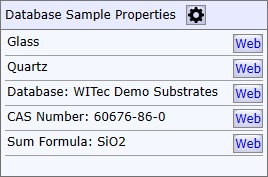
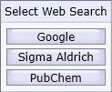
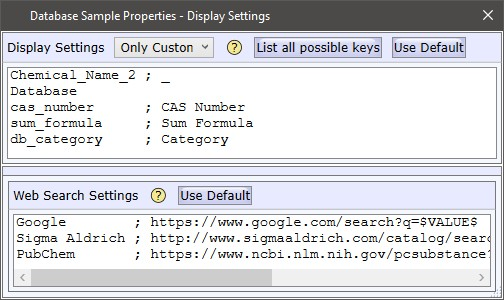
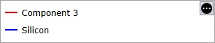

|
样品属性显示
|

样品属性框显示关于数据库光谱或搜索结果的某些附加信息。要编辑您自己自定义数据库的样品属性，请参见 数据库编辑器 和 样品属性编辑器。
网络搜索
您可以单击Web按钮以搜索特定属性（使用默认搜索）。
通过 右键单击，您可以在可自定义的搜索列表中进行选择：

打开设置
您可以定义应显示哪些属性，并为每种信息定义网页链接：

显示设置
显示全部（组合框）
您可以在以下选项之间选择：
列出所有可能的键
枚举所有数据库中的所有信息键并显示它们。
使用默认
使用一组默认的样品属性。
文本框
在此您可以定义应显示哪些属性。语法：<属性名称> ; <可选显示名称>
网络搜索设置
在此您可以定义任意数量的网络搜索URL，用于在网络上搜索所有样品属性。文本框中的每一行定义一个搜索。
第一行是 默认搜索，通过左键单击执行。
语法：<搜索名称> ; <搜索URL>
搜索URL中的字符串。
用户光谱属性

最右侧的小按钮将显示用户光谱的属性（如果有设置）。在此您也可以定义应显示哪些属性。